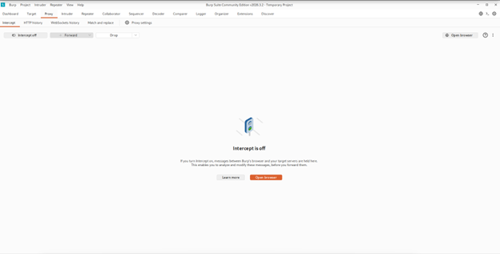
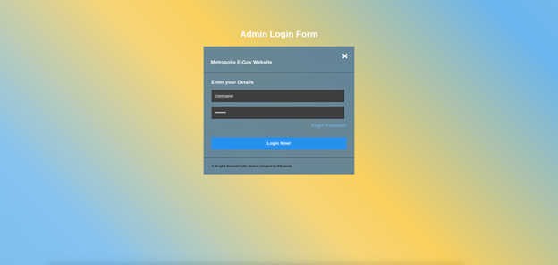
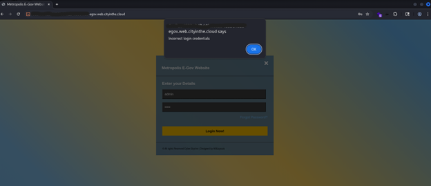
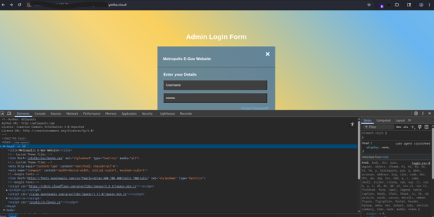
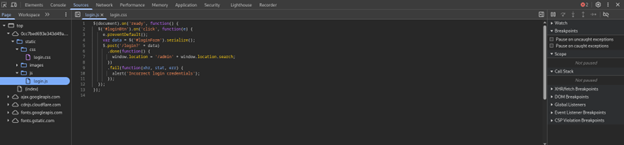
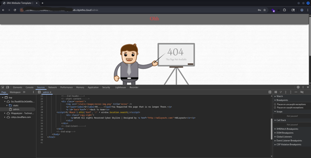
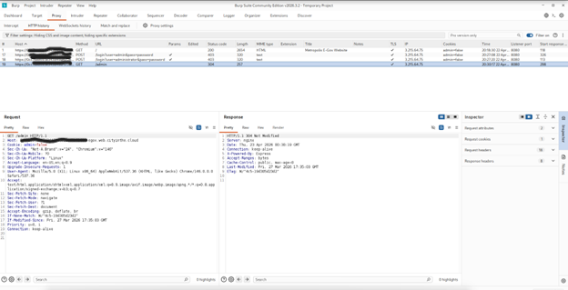
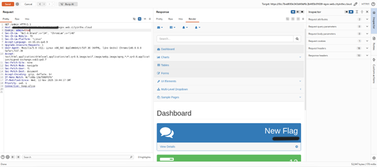
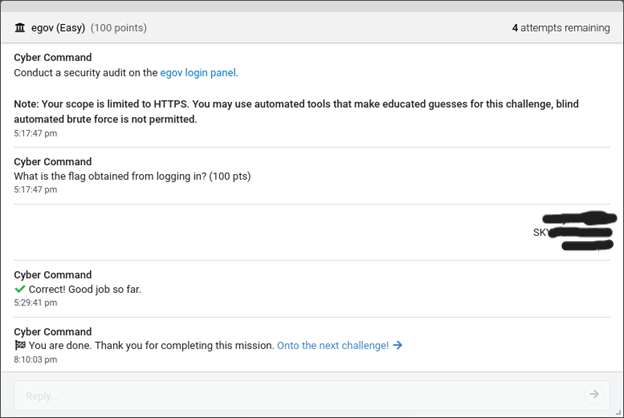

Web App Challenge: E-Gov
This was a fun NCL challenge under Web Application Exploitation
Please note that the flag is not visible here, learning is not done through copy and paste ;-)
This challenge was classified as Easy
I very much enjoy web app challenges in general, and this one was a fun warm-up that can be completed fairly quickly.
Whenever I start any web app challenge, my first stop is always Burp Suite. I use the Community Edition, as I am a student and cannot currently afford a license (hint hint PortSwigger 😄). If you are unfamiliar with Burp Suite, PortSwigger has some amazing lessons available on their website: https://portswigger.net/web-security.

My normal SOP (Standard Operating Procedure) is to open up the Burp Chromium browser and start poking around.
When we visit the provided link, we are taken to the Cyber Skyline E-Gov admin login page.

Login pages are always interesting to tackle. There are so many moving parts and considerations for the development team that simple mistakes can sometimes slip through.
So, we start poking around a little bit.
Something that may seem too obvious—but actually happens quite often—is the use of default credentials such as “admin” and “password” (which, as you can imagine, is not good practice).
Thankfully, or rather, unluckily for us—that is not the case for this site.

But that is fine. It just means we need to dig a little deeper and build a better picture of what is happening.
A quick way to start exploring is through the browser’s developer tools. You can access these by right clicking and selecting “Inspect” or by pressing Ctrl + Shift + I.
You will be greeted with something that looks like this

In the Elements section, I can see that the page is calling a script—specifically /static/js/login.js.
This is something we want to look at, as it may give us clues about what the web app expects from a user.

Here we see a couple of things, but what catches my eye the most is the /admin endpoint that it points to.
The next logical step is to see if I can manually alter the HTML to access it without logging in.
This is highly unlikely to work, but it may still provide useful information from the response.

As expected, that approach does not work—but that does not mean all hope is lost.
This is where Burp Suite really starts to shine.
When I go back to Burp Suite, I can see that we have some interesting information to work through.

What stands out to me is the cookie value—it is currently set to admin=false.
So the obvious question becomes: what happens if we set it to true?
Burp Suite has a powerful tool for working with requests called Repeater.
I right-click the request and send it to Repeater.
From there, we can begin manipulating the request to observe how the application responds.
The first change I make is setting admin=true and seeing what happens.

And just like that—we have something.
The response panel initially shows the formatted code, but for quick analysis I prefer using the “Render” option.
Once rendered, we can see that we have successfully accessed the admin dashboard—right where we want to be—with the flag visible.
Overall, this was a fun challenge and a great way to warm up, whether for individual practice, team competitions, or just for the enjoyment of solving problems.

Happy Hacking :-)